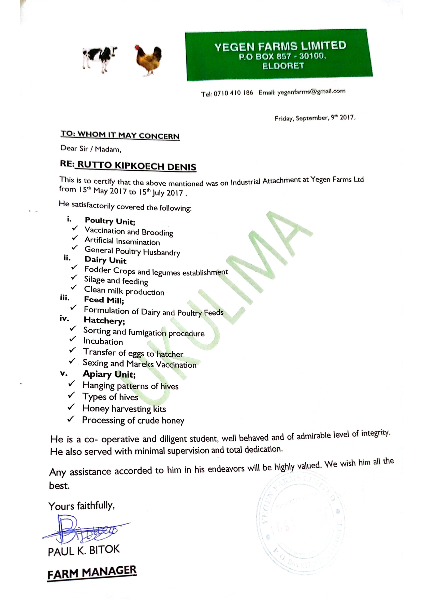
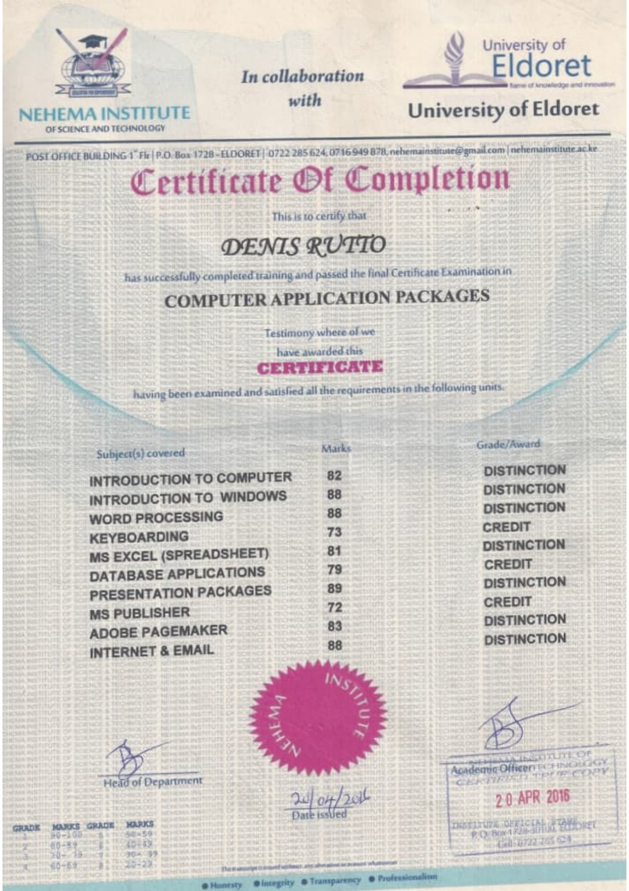

Professional Qualifications
Certificates & Credentials
A collection of my professional certifications, training certificates, and academic credentials.

Yegen Recommendation Letter
Yegen Farm
2017
Professional
Computer Certificate
Computer Training Centre
2020
Training
Diploma Certificate in General Agriculture
Kaiboi Technical Training Institute
July 2022
Academic
Transformational Leadership Skills Induction Certificate
Leadership Development Institute
2023
TrainingCounty Recommendation Letter
Uasin Gishu County Government
2024
Professional